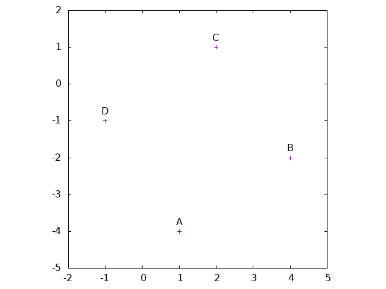
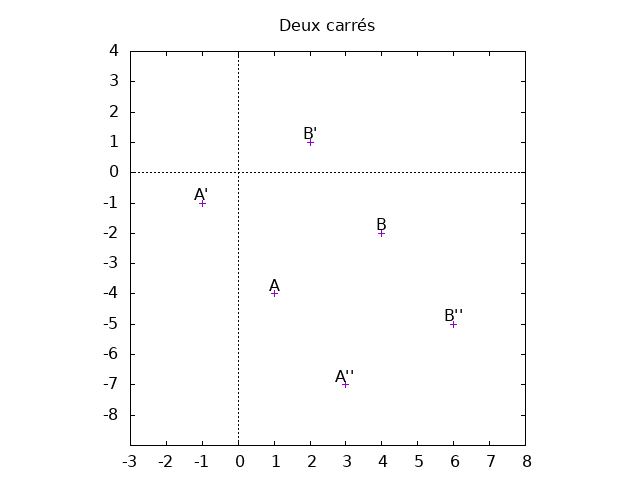
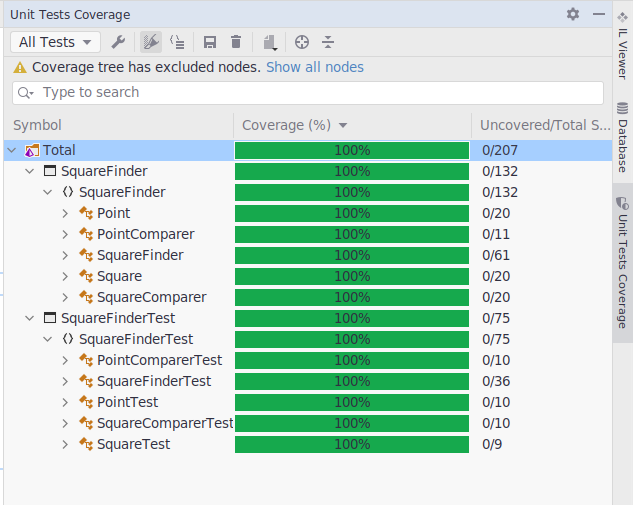
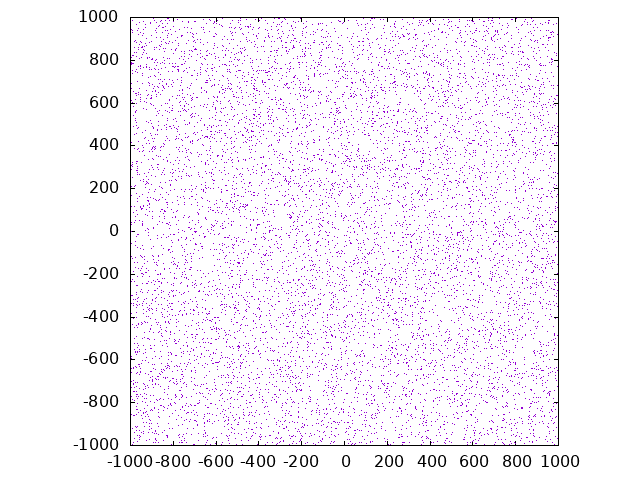

Recherche de carrés dans un nuage de points
Table des matières
1. Demande
Soit un fichier contenant un ensemble de points dans un espace à deux dimensions. Le fichier est composé de lignes, chacune d’elle contient un point représenté par ses coordonnées sous la forme suivante :
x y
À partir de l’ensemble de ces points, combien de carrés est-il possible de former. S’il n’y en a pas comment le démontrer ?
Exemple : les coordonnées ci-dessous forment un carré valide
| x | y | label |
|---|---|---|
| -1 | -1 | D |
| 2 | 1 | C |
| 4 | -2 | B |
| 1 | -4 | A |

2. Analyse
Pour chaque coupe de points (A, B) dans le plan il est possible de déterminer quatre autres point A’, A’’ et B’, B’’ tels qu’à eux 8 ils forment deux carrés.
Dans l’exemple précédent si A = (1, -4) et B = (4, -2) alors il est possible de calculer des valeurs pour A’, A’’ et B’, B’’ telles qu’il soit possible de former deux carrés.
A' = (-1, -1) et A" = (3, -7) B' = (2, 1) et B" = (6, -5)
| x | y | label |
|---|---|---|
| 1 | -4 | A |
| 4 | -2 | B |
| -1 | -1 | A’ |
| 2 | 1 | B’ |
| 3 | -7 | A’’ |
| 6 | -5 | B’’ |

À partir de cela il est possible de rechercher dans la liste des points s’il existe des points correspondants à A’, A’’ et B’, B’’.
Si l’on décide de trier les points en partant des plus petites valeurs de x et de y jusqu’aux plus grandes (d’en bas à gauche vers en haut à droite) alors il est possible de ne considérer que les points A’ et B’ qui se situent au-dessus de A dans le calcul. Cela est possible, car les points situés au-dessous sont soit inexistant dans l’ensemble des points donnés (le point A est le plus en bas à gauche) soit ont déjà été traités par les itérations précédentes et ont donc déjà été ajoutés à la liste des carrés identifiés.
Cela permet d’extraire la formule suivante pour calculer les coordonnées de A’ et B’ :
A'.x = A.x - (B.y - A.y) A'.y = A.y + (B.x - A.x) B'.x = B.x - (B.y - A.y) B'.y = B.y + (B.x - a.x)
2.1. Remarque
Le fichier contient des doublons :
❯ cat ../../exercice.txt| sort -n | uniq -dc | wc -l
18
❯ cat ../../exercice.txt| sort -n | uniq -dc
2 -997 -585
2 -895 -593
2 -867 673
2 -844 -151
2 -759 -190
2 -615 97
2 -380 754
2 -289 -146
2 -203 -394
2 308 847
2 331 -818
2 366 -960
2 383 870
2 402 -528
2 416 2
2 581 188
2 773 450
2 786 660
J’ai pris le partis de considérer qu’il s’agissait d’une erreur dans
le fichier et de ne conserver qu’une seule occurrence (Cela est
fait en utilisant un SortedSet qui exclut les doublons lors de l’ajout).
3. Réalisation
Le langage choisi est le C#.
L’idée générale est la suivante :
- Lire chaque ligne du fichier et la stocker dans une structure ordonnée,
- Parcourir la structure dans l’ordre
- Pour chaque point, parcourir la suite de la structure et calculer
les points possibles pour un carré,
- Vérifier si le point existe
- Ajouter le carré à la liste s’il n’existe pas déjà
3.1. Détails
Les points seront stockés dans un objet Point définis comme suit:
namespace SquareFinder; public class Point { public Point() { } public Point(int x, int y) { X = x; Y = y; } public Point(Point a) { X = a.X; Y = a.Y; } public override string ToString() { return $"({X}, {Y})"; } public int X { get; set; } public int Y { get; set; } }
L’idée générale est de stocker l’ensemble des points dans une
structure de données permettant un accès rapide pour la vérification
de la présence des points. Un SortedSet<Point> est utilisé avec un
PointComparer pour trier l’ensemble.
namespace SquareFinder; public class PointComparer : IComparer<Point> { public int Compare(Point? a, Point? b) { if (a is null && b is null) return 0; if (a is null) return -1; if (b is null) return 1; var yDelta = b.Y < a.Y ? 1 : b.Y == a.Y ? 0 : -1; var xDelta = b.X < a.X ? 1 : b.X == a.X ? 0 : -1; return yDelta == 0 ? xDelta : yDelta ; } }
Les accès au point depuis le SortedSet sont garantis en O(log n)
par l’implémentation de Microsoft (SortedSet<T>.Contains(T) Method)
Puis pour chacun des points présent dans le set parcourir l’ensemble des points situés plus avant, calculer les points possibles pour un carré et vérifier s’ils existent.
Si oui, ajouter le carré trouvé à la liste des carrés en triant les sommets par ordre croissant dans le plan (comme pour les points en entrés).
La liste des carrés trouvés est également un SortedSet mais un
SortedSet<Square>. Cela permet de ne pas créer de doublons lors de
du parcours. En effet lors du parcours, B et A’ seront présent dans
le parcours.
Il y a sans doute une amélioration à ajouter pour détecter ce cas pour éviter d’avoir recours à cette structure de donnée.
4. Validation
Un ensemble de tests unitaires a été ajouté pour valider les composants séparément.

5. Exécution
Lancement depuis la ligne de commande
time dotnet run ../../exercice.txt
❯ time dotnet run ../../exercice.txt List of points contains 9982 elements. First / last point (-737, -1000) / (394, 999). First / last x -1000 / 999. First / last y -743 / 269. Found 56 ! dotnet run ../../exercice.txt 27,31s user 0,29s system 99% cpu 27,620 total ╭─ ~/Travail/VCS/BeTomorrow/SquareFinder/SquareFinder master !3 ?2 ✔ 28s ╰
Ce qui donne 56 carrés trouvés en 28 secondes.
6. Améliorations
Pour optimiser le temps d’exécution, j’ai l’intuition qu’il est possible d’arrêter les parcours des points A et B, en utilisant les propriétés du plan (min et max des coordonnées) mais je n’ai pas réussi à trouver comment.
J’ai exclu les améliorations suivantes :
- Détecter que tous les points sont sur la même droite (le cas n’est pas présent dans le fichier),
- Détecter qu’il n’y a pas assez de points pour former un carré (le parcours étant très rapide dans ce cas-là ce n’est sans doute pas utile).
7. Divers
Visualisation des données founies dans le fichier exercice.txt:
